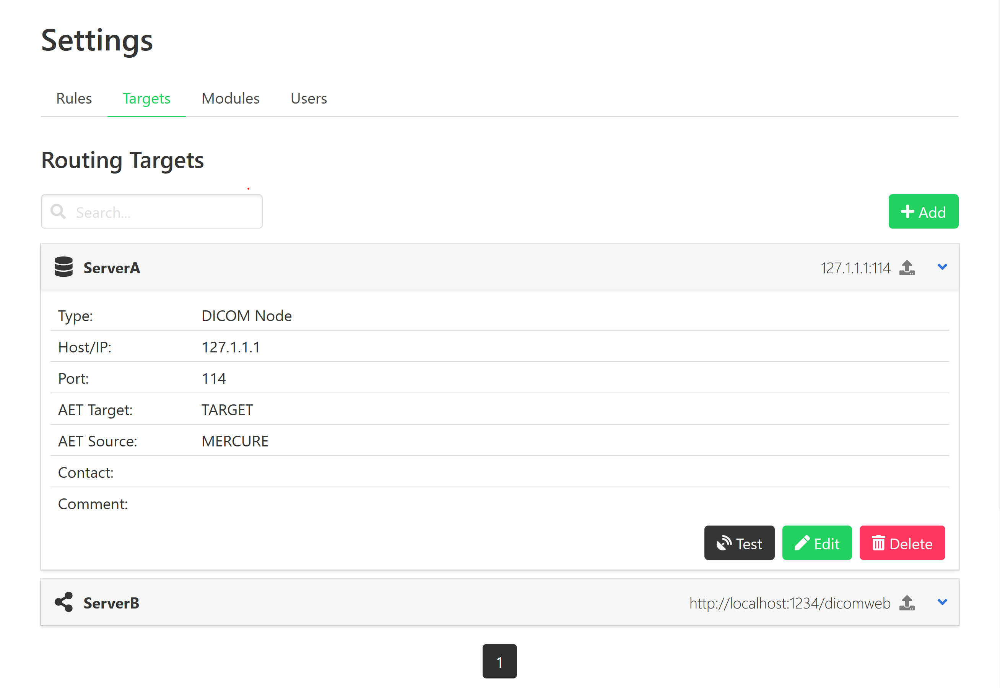
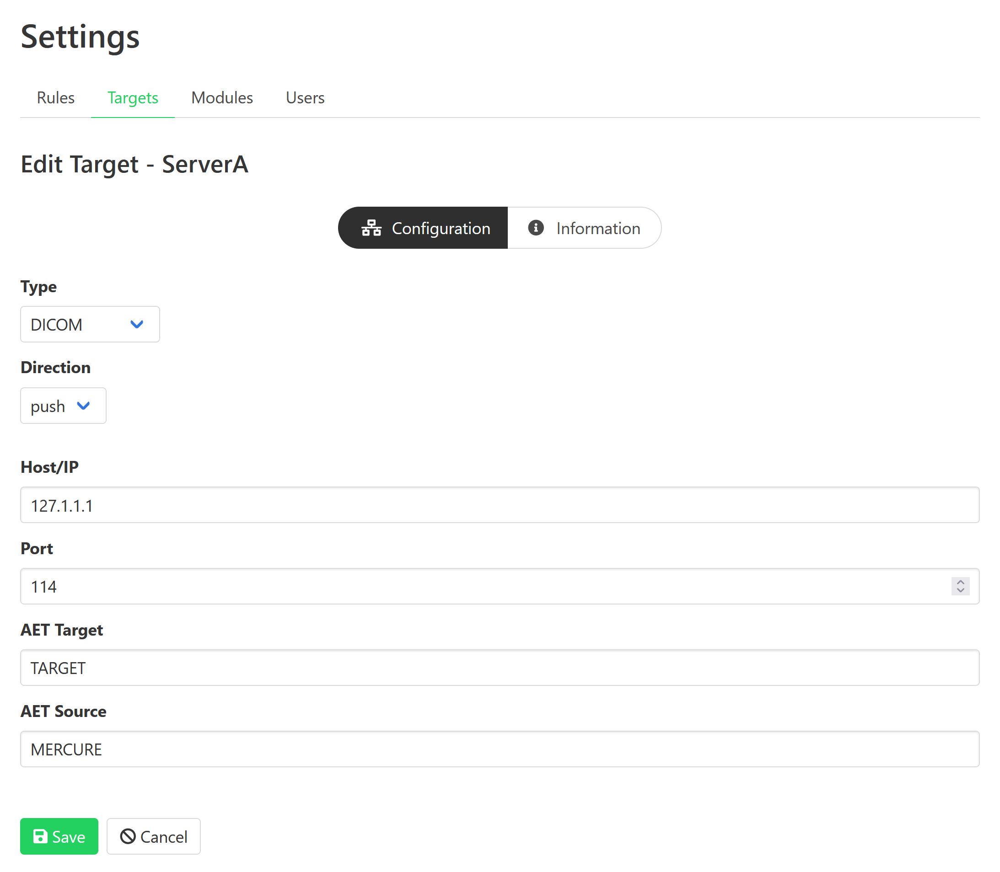

Targets
Overview
Targets define connections to external data storage locations. These are used to send and retrieve DICOM studies.
Target nodes can be defined and configured on the “Settings > Targets” page. The first page shows an overview of the currently configured targets. By clicking on an individual item, you can see the target details (e.g., IP address and port). You can test if the target can be reached by clicking the “Test” button, which will try to ping the server and check the connection.
{kind=link}
Click the “Add” button to create a new target. This can be done during normal operation of the server, i.e. it is not necessary to stop any of the services for adding new targets.
{kind=link}
After choosing a unique name for the target, you can edit the target settings.
Type |
Push |
Pull (Query) |
|---|---|---|
DICOM |
Y |
Y |
DICOM+TLS |
Y |
N |
DICOMWeb |
Y |
Y |
Folder |
Y |
N (but see DICOMWeb) |
rsync |
Y |
N |
S3 |
Y |
N |
SFTP |
Y |
N |
XNAT |
Y |
N |
Direction
The default direction, “store”, is available on all targets. This indicates that this target can be used at a routing target.
“Query” indicates that this target can only be used as datasource in the Query tool. This should be used for services that cannot or should not be sent to, but can be queried. It is currently available for DICOM and DICOMWeb targets.
“both” indicates that this target can be used in both situations.
Information
On the “Information” tab, you can add information for documentation purpose, including a contact e-mail address (so that it can be looked up who should be contacted if problems with the target occur) and a description of the target.
DICOM
For DICOM targets, enter the parameters of the DICOM node, including the IP address, port, the target AET (application entity title) that should be called on the receiver side, and the source AET (AEC) with which mercure identifies itself to the target. By clicking the option “Pass Incoming Value”, the outgoing AET (or AEC) value will be set to the value of the received DICOM series. This allows preserving the original AET/AEC values, so that mercure can be placed transparently between an imaging device and a target DICOM node (e.g., for modifying certain DICOM tags or similar).
Tip
Some DICOM nodes require that you set a specific target AET, while other systems ignore this setting. Likewise, some DICOM nodes only accept images from a sender who’s source AET is known, while others ignore the value. Please check with the vendor/operator of your DICOM node which values are required.
For DICOM TLS targets, enter the TLS client key path, TLS client certificate path, and the path to the Certificate Authority (CA) certificate file. You will need to add these files to your mercure installation, e.g. in /opt/mercure/certs.
Important
Support for DICOM TLS transfers is still experimental and should be used with care.
Important
Due to an incompatibility in DCMTK v3.6.4 and OpenSSL v1.1.1, the versions supported by Ubuntu 20.04, support for DICOM TLS targets is only available when mercure runs under Ubuntu 22.04 or newer.
DICOMWeb
The DICOMWeb target allows sending and querying DICOM images over a RESTful interface (also known as WADO). It can be used with any DICOMWeb-compliant server. It supports traditional basic authentication (username and password) as well as token-based authentication.
The DICOMWeb target additionally supports querying a local folder of dicoms. To use this, specify the folder with file://, eg file///media/dicoms. If mercure has write permissions, it will generate a sqlite index, otherwise it will re-index it on each query. Needless to say, if the folder is too large, this would make queries very slow and resource intensive.
Folder
The folder target allows storing images (or results) inside a folder on the the mercure server (either on a local drive or mounted network share). When running a Docker-based mercure installation, this folder will be inside the dispatcher container. Thus, for this folder to be available and persist on the base system, the Docker Compose configuration must map this folder to a Docker volume or a folder in the base filesystem.
The “Exclusion Filter” option is a comma-separated list of glob expressions , which allows specifying files to be ignored. For instance, if a processing step produces dicoms, pngs and json, *.png,*.json will skip the png and json files from being sent.
rsync
The rsync target allows storing files on a remote Linux server using the rsync protocol. This is useful for transferring large files or directories efficiently. The rsync connection will use certificate-based authentication if possible, but you can also specify a username and password if necessary.
If the “Execute shell command after transfer” option is set, mercure will attempt to log into the server via SSH and execute a script named mercure_complete.sh in the target folder. This allows triggering processing algorithms on the remote Linux server after all images have been transferred. The command will be executed as
mercure_complete.sh <destination_folder> <target_name>
SFTP
The SFTP target can be used to transfer files to remote servers using the SFTP protocol.
For SFTP targets, enter the hostname or IP, target folder on the server, username, and password.
Tip
It is recommended to create a restricted user account for the SFTP uploads. Never use the credentials of an account with access to sensitive information, as the SFTP credentials are stored in the configuration file.
Important
Support for SFTP transfers is still experimental and should be used with care.
S3
The S3 target allows transferring the DICOM files to S3-compatible cloud storage buckets (such as hosted by AWS).
XNAT
The XNAT target can be used to store studies on a server running the XNAT imaging informatics platform.